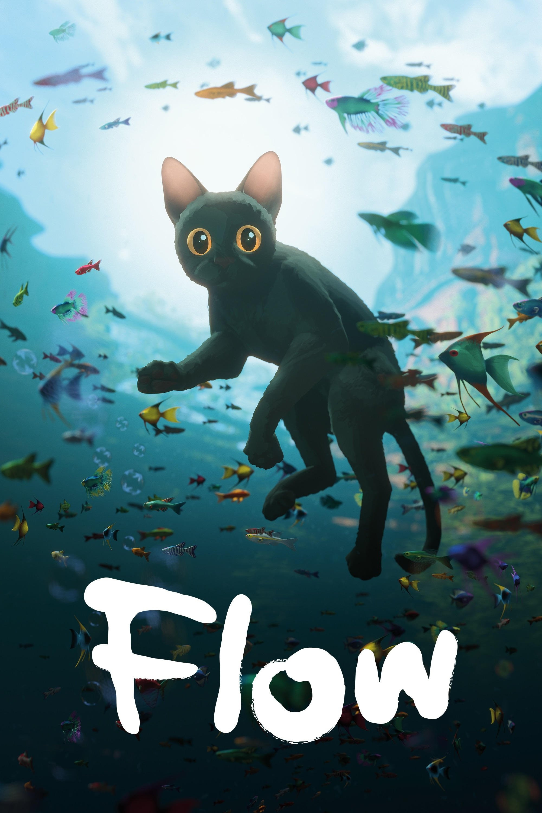

Flow
Anno di uscita: 2024

Come i precedenti film di Gints Zilbalodis, Flow è senza dialoghi. Il regista spiega che la sua forza sta nel raccontare storie per immagini e non per parole e che l'obiettivo di Flow è che la storia proceda per immagini. Zilbalodis non ha realizzato lo storyboard del film, ma ha creato direttamente un enorme ambiente tridimensionale, nel quale ha posizionato telecamere virtuali per la realizzazione in tempo reale. Il film contiene 22 sequenze e 307 inquadrature. Lo stile di animazione è naturalistico, fluido, a 24 fps. La produzione dell'animazione è stata realizzata in 6 mesi, con una media di 2 secondi al giorno per animatore.
Trama:
Un gatto solitario, sradicato da una grande alluvione, trova rifugio su una barca insieme a diverse specie e deve affrontare le sfide dell'adattamento a un mondo trasformato.
Regia:
Gints Zilbalodis
Studio di animazione:
Dream Well Studio
Vincitore dell'Oscar nel
2025